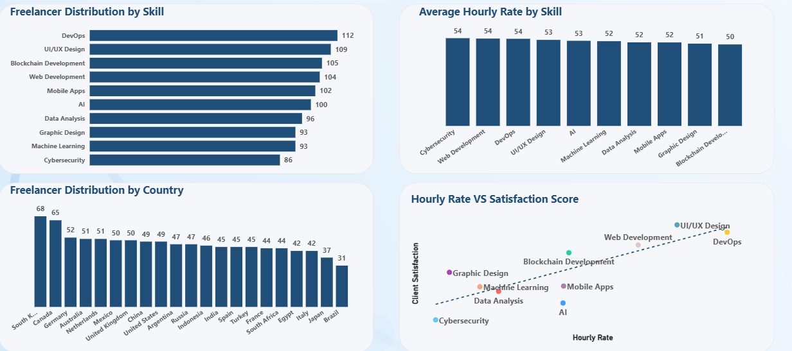
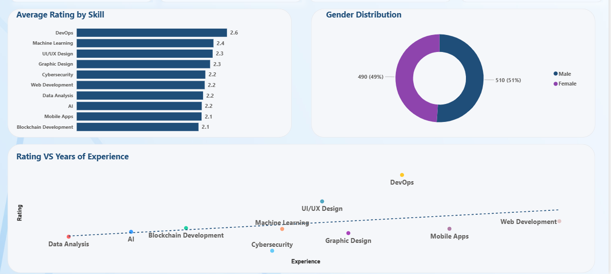
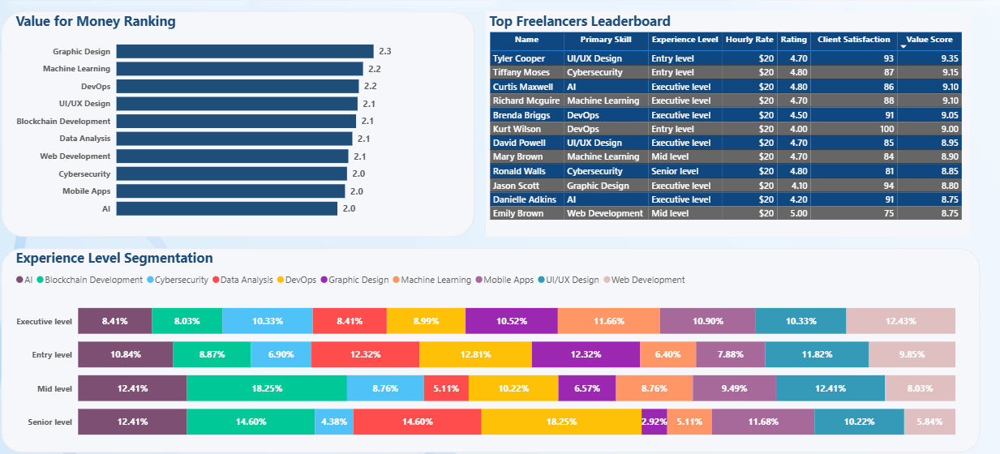

Intelligence Report · Power BI Dashboard Analysis · by Idowu Aluko
With an average client rating of just 2.26/5 and no skill category exceeding 2.6, the platform faces a systemic service delivery problem that threatens client retention and platform reputation.
Hourly rates are virtually flat across all skills ($50–$54), ignoring scarcity and demand signals. High-demand skills like Cybersecurity are priced identically to commoditised ones, leaving revenue on the table.
Freelancer supply is heavily concentrated in a handful of markets (South Korea, Canada), while large talent economies like Brazil and Japan remain vastly underrepresented — limiting diversity and scale.
AI, Blockchain, and Mobile Apps — skills commanding global premium rates — consistently score the lowest on client satisfaction and value for money, indicating a serious expectation-delivery gap.
Without a clear signal distinguishing top from average freelancers, clients cannot make informed hiring decisions. The platform lacks a reliable meritocratic layer to surface quality talent.
Senior and executive-level freelancers do not consistently outperform entry-level peers on client ratings, revealing that experience-based matching systems may be fundamentally flawed.
Give stakeholders a real-time view of how freelancer supply maps across skills and geographies, revealing concentration risks and untapped market opportunities.
Track client rating and satisfaction KPIs to identify which skills and experience tiers are meeting client expectations and which are consistently falling short.
Surface the relationship between hourly rates, satisfaction, and value scores to help freelancers price strategically and platforms design better compensation benchmarks.
Identify the characteristics of the highest-value freelancers to create replicable success models — supporting talent development and client matching algorithms.

| Visual | What It Shows | Why It Matters |
|---|---|---|
|
Freelancer Distribution by Skill
Bar Chart
|
Ranks all 10 skill categories by total headcount. DevOps (112) and UI/UX Design (109) lead supply; Cybersecurity (86) sits last. | Reveals competition density per skill. High supply = harder to stand out. Low supply with high demand (Cybersecurity) = easier market entry. |
|
Average Hourly Rate by Skill
Column Chart
|
Compares the average rate freelancers charge across skills. All cluster tightly between $50 and $54, with no dramatic outlier. | Exposes a critical pricing inefficiency, scarcity and demand are not being reflected in rates. This depresses platform revenue potential. |
|
Distribution by Country
Column Chart
|
Shows freelancer count per country across 20+ nations. South Korea (68) and Canada (65) lead; Brazil (31) is the lowest. | Identifies supply concentration risk and geographic expansion opportunities in underrepresented high-growth markets. |
|
Hourly Rate vs Satisfaction Score
Scatter Plot
|
Plots each skill at the intersection of rate and client satisfaction. UI/UX and DevOps sit high-right. Cybersecurity and AI sit low-left. The upward trendline indicates a positive relationship between freelancer hourly rates and client satisfaction, suggesting higher-priced freelancers tend to deliver better client outcomes. | The most strategic visual, it defines which skills are worth investing in, which are overrated, and where the biggest client experience gaps exist. |

| Visual | What It Shows | Why It Matters |
|---|---|---|
|
Average Rating by Skill
Bar Chart
|
DevOps (2.6) leads; Blockchain and Mobile Apps (2.1) trail. The entire range fits within a 0.5-point band, all skills are critically underperforming. | Identifies where quality intervention is most urgent, but also signals a platform-wide problem not isolated to specific skills. |
|
Gender Distribution
Donut Chart
|
Female 51% (510) vs Male 49% (490) near-perfect parity in a traditionally male-dominated industry. | A strong inclusion signal. Next question: does this parity hold across high-earning skill categories and experience levels? |
|
Rating vs Years of Experience
Scatter Plot
|
Maps skills by experience and rating. DevOps earns higher ratings with more experience; Data Analysis and AI show low ratings regardless of tenure. | Challenges experience-based hiring assumptions. For many skills, more experience does not mean better client outcomes soft skills and communication likely matter more. |

| Visual | What It Shows | Why It Matters |
|---|---|---|
|
Value for Money Ranking
Bar Chart
|
Graphic Design (2.3) tops the value chart; AI and Mobile Apps (2.0) are bottom-ranked. DevOps ranks 3rd despite dominating ratings. | Decouples quality from value, clients judge perceived worth relative to price. High-rated skills can still deliver poor value if priced incorrectly. |
|
Top Freelancers Leaderboard
Data Table
|
Shows the top 12 freelancers by value score. All charge $20/hour (well below the $52.46 avg). Highest score: Tyler Cooper (9.35), Entry-level UI/UX. | Proves the winning formula: lower price + high satisfaction + consistent delivery = best value score. Experience level is irrelevant to top-tier performance. |
|
Experience Level Segmentation
100% Stacked Bar Chart
|
Breaks down skill distribution across 4 experience tiers. Blockchain Development attracts a high mid-level share (18.25%); Machine Learning dominates at senior level (14.6%). | Reveals career migration patterns and where skills attract experienced professionals, enabling workforce planning and platform recruitment targeting. |
Platform-wide quality failure: No skill category achieves even a 3/5 client rating. With a 2.26 average, the platform risks losing clients to competitors offering more reliable quality assurance.
Cybersecurity is a blue ocean: Lowest supply (86 freelancers), global high-demand, yet priced identically to all other skills. Strategic recruitment and premium pricing here could significantly boost platform revenue.
Low price wins, not high skill: Every single top-10 leaderboard freelancer charges $20/hour — 62% below the platform average. Value perception outweighs technical credentials in client decision-making.
AI and ML are overpromising: Despite being prestige skills attracting senior talent, AI and Machine Learning consistently deliver the lowest client satisfaction and value scores — signalling a serious delivery gap.
Gender parity is a competitive advantage: With a near-perfect 51/49 female-to-male split, this platform is more inclusive than the industry norm — a powerful differentiator for enterprise clients with DEI mandates.
Geographic diversification is untapped: Brazil, Japan, Egypt, and Italy collectively have fewer freelancers than South Korea alone. Targeted expansion in these markets could double active supply without increasing competition in existing categories.
Closing the gap from 65% to 90% client satisfaction through quality programmes could directly reduce churn and increase repeat hire rates.
Skills like Cybersecurity and DevOps could command $65–75/hour if marketed and matched based on verified value scores rather than flat-rate listings.
Targeting underrepresented markets (Brazil, Japan, Southeast Asia) could double active freelancer supply within 12 months without oversaturating existing skill categories.
The leaderboard proves a reproducible success formula — $20 rate + high satisfaction + consistency. Coaching mid-tier freelancers on this model could elevate the platform average significantly.
Near-equal gender balance positions the platform to win enterprise contracts from organisations with DEI hiring requirements — a $B+ market segment often underserved.
The skill with lowest supply and globally highest demand has only 86 active freelancers. A targeted acquisition drive here creates a defensible niche with premium pricing power.